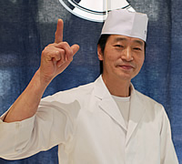

春の食材を引き立てる味付けの釜めし。その上にのせる春キャベツは食感を大切に火を通しすぎないように。
黒大豆（料理に使用した品種：黒船）
科属：マメ科ダイズ属
黒大豆は大豆の品種のひとつ。良質なタンパク源。
お米とともに摂取するとアミノ酸のバランスが良いといわれている。
本多 勝彦（ほんだ かつひこ）
昭和41年1月1日生まれ、新潟県出身。20歳で和食を志す。割烹にいがた雪国、吉祥、赤坂しゃぶ玄、銀座江島、NTTデータ等で料理経験を重ね現在に至る。豊受オーガニックレストラン料理長
豊受の農場からやってくる野菜から春の訪れを感じています。
どの食材もわたしにとっては大事ですが、野菜を手に取るたびにどう美味しく食べていただけるかを考えます。
野菜の「食感と香り」を大切に、ちょうどいい塩梅（あんばい）でいただけるように。
・米 … 2合
・米ぬか
・鷹の爪
・春キャベツ
〈A〉
・竹の子
・ニンジン
・厚揚げ
・黒大豆
〈B〉
・鰹だし … 300cc
・酒 … 20cc
・みりん … 20cc
・薄口しょうゆ … 20cc
・塩 … 少々